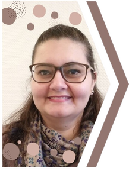

Realize o Sonho de Ter a Cidadania Italiana !
Obtenha a cidadania italiana através de seu antepassado italiano que imigrou para o Brasil. Você pode fazer tudo sozinho sem precisar pagar caro por uma assessoria. Eu vou te ensinar como:
- Descubra o nome, datas e locais de nascimento, casamento e óbito de seu antepassado italiano fazendo sua pesquisa genealógica.
- Siga o roteiro com o passo a passo das exigências do consulado italiano de sua jurisdição.
Não sabe o que é genealogia, como encontrar o passo a passo do consulado, muito menos a qual consulado deve se apresentar?! Não se preocupe. Explico aqui no site o que são e como conseguir fazer tudo isso. Está pronto para mergulhar num conhecimento que vai te abrir portas de grandes oportunidades? Ótimo. Bora começar então:
Aprenda o que é a genealogia e história da família. Como começar sua pesquisa e onde guardar todas as informações encontradas.
Aprenda quais documentos são necessários para o reconhecimento da cidadania italiana e como fazer o pedido de reconhecimento enquanto mora no Brasil.

Sobre Mim
Me chamo Tatiana, sou de Minas Gerais e hoje moro na Alemanha com meu marido e filhos. Isso foi possível graças ao trabalho árduo e diligente que despendi para que meu marido e filhos pudessem ter a cidadania italiana reconhecida. Fiz o processo sem pagar ninguém para isso e enquanto ainda morávamos no Brasil Criei esse site para compartilhar meu conhecimento sobre a pesquisa genealógica e o reconhecimento da cidadania italiana. Sinto-me abençoada por ter conseguido alcançar esse sonho para meu marido e filhos — e todos as vantagens que eles e eu usufruimos dessa conquista.
Em 2012 comecei a pesquisar as informações sobre a descendência italiana do meu marido e depois de muita paciência e perseverança, em dezembro de 2019 recebemos o comunicado de que a cidadania deles finalmente havia sido deferida!
Meus filhos estão aprendendo alemão e inglês através de um ensino público de qualidade, temos acesso a um sistema de saúde excelente, vivemos tranquilos porque nos sentimos seguros, para enumerar apenas algumas das vantagens do reconhecimento da cidadania italiana.
Você também pode alcançar seu sonho de ter sua cidadania reconhecida e usufruir dos benefícios de ser um cidadão europeu!